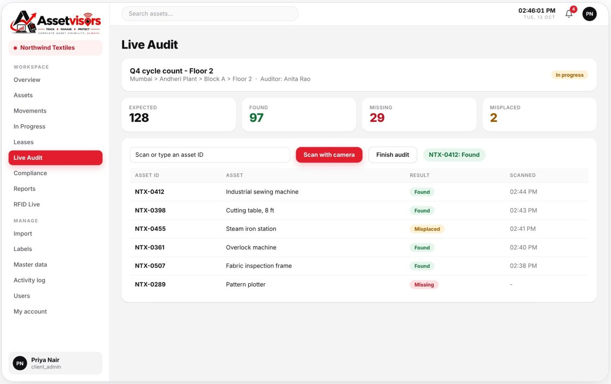
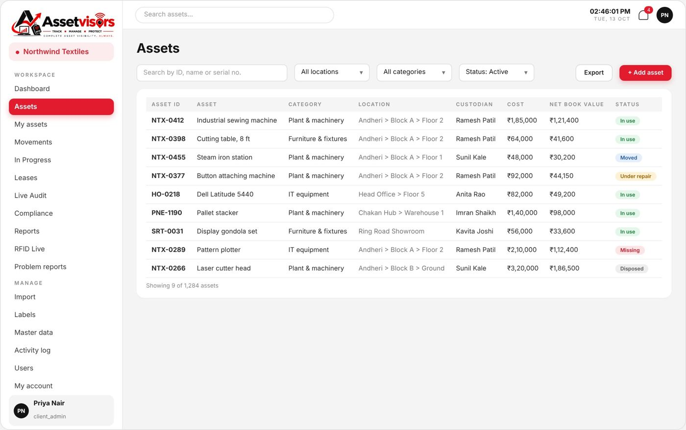
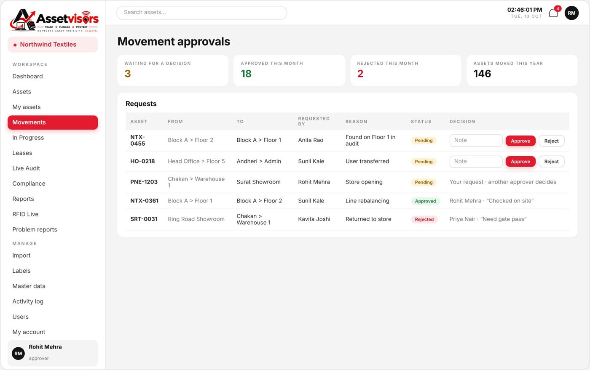
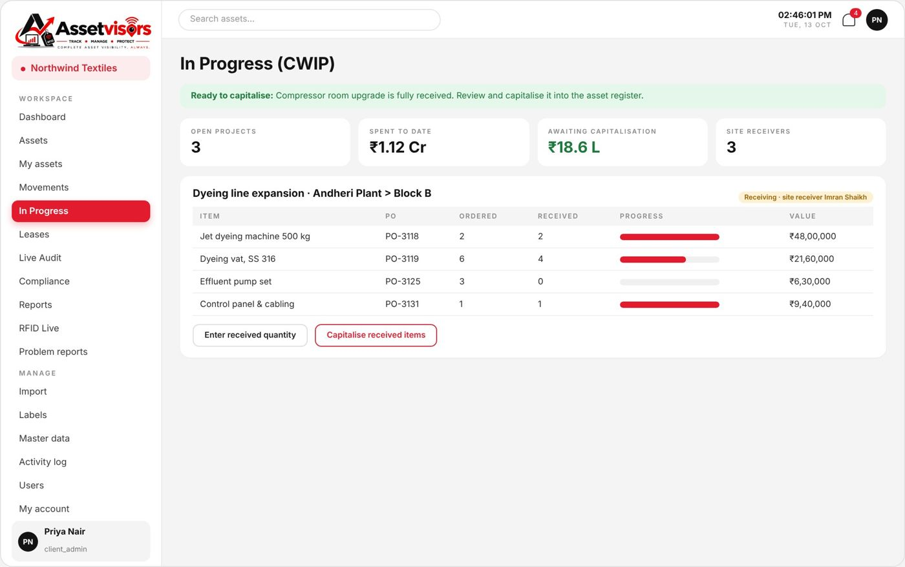
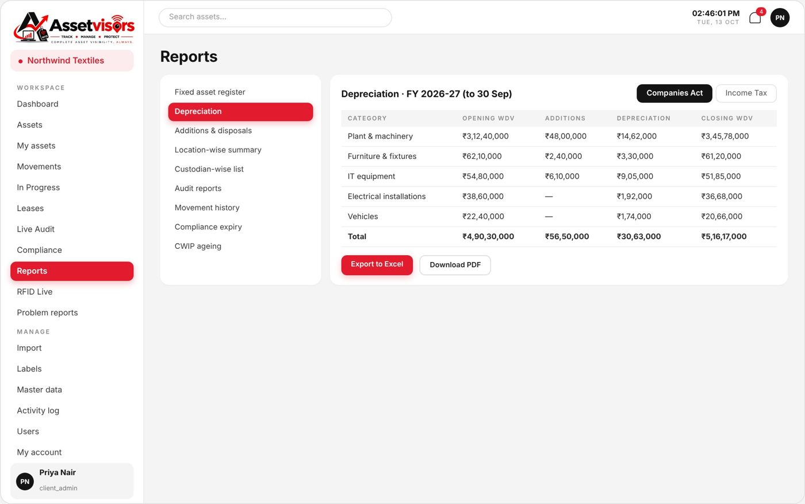
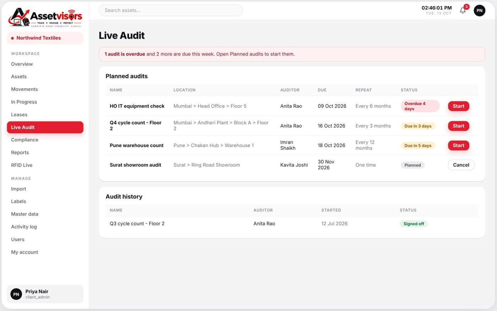
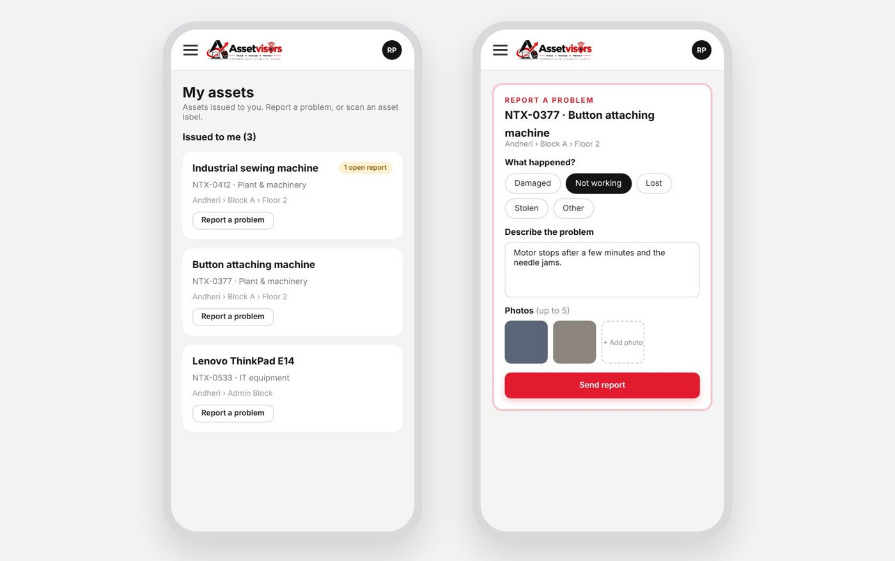

Asset register
Search by ID, name or serial. Cost, net book value, custodian, photos, invoices and warranty documents on every record.
Our field teams carry out physical verification of fixed assets and barcode, QR and RFID tagging on site. AssetVisors then gives every asset a unique ID and a QR/barcode label, follows it from purchase to disposal, and lets your team audit any floor live from a phone, with approvals, depreciation and reports built in.

More than an asset register
The problem we fix
Most fixed asset registers drift from reality within a year. Assets move floors, change hands or quietly disappear. Here’s what changes with AssetVisors.
The platform
Switch on the modules each business needs. Each client gets its own secure workspace.
Search by ID, name or serial. Cost, net book value, custodian, photos, invoices and warranty documents on every record.
Print labels for a whole floor in walking order. We supply printers and tamper-proof labels.
Every move is requested, then approved by a second person. The register updates itself.
Plan, scan, reconcile and sign off audits location by location, with blind counts and offline scanning.
Projects from a PO. Site receivers record what arrives; admins capitalise in one click.
Warranty, insurance, AMC and statutory renewals, service history and next due dates.
Liability, interest and right-of-use schedules worked out month by month. Overdue rent flagged.
Companies Act and Income Tax depreciation, register on any date, ageing and expiry reports.
Capitalisation, depreciation, disposal and lease journals as Tally XML or CSV.
Employees see the assets issued to them and report problems by scanning a label.
Every scan, edit and approval on record. A bell and a daily email for what needs you.
Readers by location, tags linked to assets and live reads. Hardware rollout is the next phase.
Register

Movements and approvals

In Progress (CWIP)

Reports and finance

Live Audit
Seven steps, one clean record. Pick a step to see the screen.

Who uses AssetVisors
Runs the company workspace, users and locations.
Adds and edits assets, requests moves, handles problem reports.
Approves or rejects movement requests.
Scans and records findings on the audits given to them.
Records goods arriving on assigned projects. Sees nothing else.
Sees assets issued to them and reports problems.
Read-only access for leadership or auditors.
The AssetVisors team: sets up clients and modules.
Site managers are any of these roles limited to chosen sites. They see and act only on those locations.
Employee portal

Built for trust
Each person sees and does only what their role allows.
Users can be tied to chosen sites, so teams work only their own places.
Each client’s data is kept apart and never visible to another.
Moves and write-offs need a different approver, with the note on record.
Captcha, two-step verification with an authenticator app, and self-service reset.
Who did what and when, ready for your internal or statutory auditor.
On-ground services
Our team verifies and tags your assets on site, using AssetVisors, so every finding has a scan, a time stamp and a photo, and stays with you after we leave.
Wall-to-wall floor counts by trained teams, matched against your register: found, misplaced, missing and not listed.
Tamper-evident, void-if-removed labels with your own numbering, printed floor by floor in walking order.
UHF passive tags, including on-metal, for racks, panels and warehouses, read in bulk with handheld readers.
Ground findings reconciled with your books; the gap valued at cost and book value for your auditors.
New purchases tracked from the PO in AssetVisors In Progress, then capitalised and labelled on day one.
Condition and photos on every asset record, ready for insurance claims and risk reviews.
De-tagging and disposal recorded with method and proceeds, with write-offs approved by a second person.
Trained, background-verified associates deployed in teams for large, time-bound projects across India.
Quarterly, half-yearly or annual counts on the same labels, compared with the last cycle.
Employees see the assets issued to them and report problems from any phone by scanning the label.
The technology
We recommend the right label for each asset category, not one tag for everything. Most sites use barcodes or QR codes for furniture and IT, and RFID where bulk reads save time.
| Option | Read range | How it’s read | Best for | Cost per tag |
|---|---|---|---|---|
| 1D barcode | Contact / near | Handheld scanner, one at a time | Furniture, tools, low-value items | ₹ |
| QR code | Contact / near | Any phone camera in AssetVisors, or a scanner | IT hardware, self-audits, employee reporting | ₹ |
| UHF passive RFID | Several metres | Handheld reader, hundreds a minute | Warehouses, server racks, panels | ₹₹ |
Scratch and chemical resistant. The standard for IT and furniture.
Leave a visible VOID mark if peeled: an instant tamper alert.
Engraved plates for machinery and outdoor equipment.
Built for racks, electrical panels and metal cabinets.
Scope of coverage
Each category is decided with you before the first label goes on, so what we count matches what Finance capitalises.
Categories and useful lives mapped for Schedule II depreciation.
A second book on the same register, side by side on screen.
Verification method and evidence trail built for PPE audits.
Verified data that supports impairment review and componentisation.
Lease liability, interest and right-of-use schedules, month by month.
NDA-bound field staff, and each client’s data kept apart in AssetVisors.
Who we serve
Pricing
A monthly cloud subscription with nothing to install. Quoted for your business, with on-ground services priced separately.
On-ground engagement models
Every drive is scoped on asset count, sites and the label mix. These are the three usual shapes.
A one-time clean-up for one location, before a statutory audit or when tracking starts.
For a few branches or floors that need tagging and the platform, not just a report.
An ongoing partnership across every location, with a named team.
Questions
No. AssetVisors runs in the phone’s browser. Open the link, sign in and tap Scan with camera.
Open the audit once while online. Scans are then saved on the phone with their real time and sync automatically when the signal returns.
Yes. Our team uses handheld barcode scanners without cameras, or printed zone checklists, and loads the results into AssetVisors the same day.
Yes. Depreciation is shown on screen under both the Companies Act and Income Tax bases, and journals export to Tally XML or CSV.
No. Moves and write-offs are requests. A second person approves each one, and every decision is kept with its note.
It depends on asset count, not floor area. As a guide, a team lead with three field executives covers about 700 assets a day, so roughly 20,000 assets take around 40 working days including set-up, reconciliation and sign-off. Bigger or urgent jobs get more teams in parallel. You get a day-wise plan before we start.
Barcodes and QR codes are the cost-effective choice for furniture and IT, and QR lets anyone scan with a phone. RFID suits racks, warehouses and places where bulk reads save time. Most sites use a mix, which we recommend after the site survey.
Yes. Label stock, printers, handheld scanners and RFID readers are part of the engagement. You don’t need to buy any hardware.
AssetVisors exports capitalisation, depreciation, disposal and lease journals as Tally XML or CSV, and the register exports to Excel for SAP, Oracle or any other system.
Field staff sign NDAs before deployment. In AssetVisors each client’s data is kept apart, access follows each person’s role and sites, and every action is logged.
Both. Many clients start with a one-time clean-up and move to a quarterly or annual retainer. Your own team can also run repeat audits in AssetVisors on the same labels.
Yes, for on-ground tagging with UHF tags and handheld readers. Inside AssetVisors, the RFID Live screen (readers, tag linking and live reads) is built, with fixed-reader rollout as our next phase. Your labels, locations and history carry straight over.
Book a demo
Tell us your asset count and sites. We’ll show the platform live, plan a pilot audit on one floor, and come back with a scoped quote, usually within one business day.